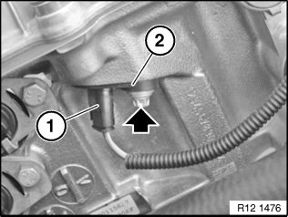
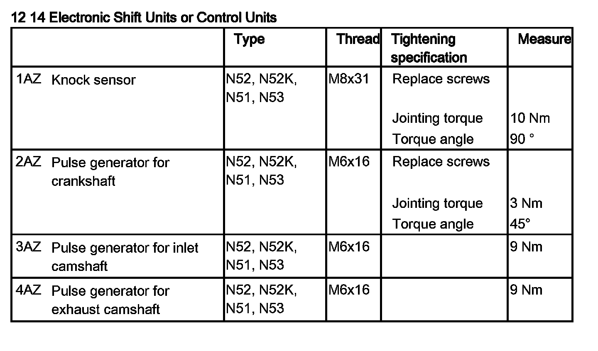

12 14 523 Replacing Inlet Camshaft Pulse Generator
12 14 523 Replacing Inlet Camshaft Pulse Generator (N52, N52K, N51, N53)

IMPORTANT: Read and comply with notes on protection against electrostatic damage (ESD protection).

Necessary preliminary tasks:
- Read out fault memory of DME control unit
- Switch off ignition
- If necessary, remove radiator cover

Unlock plug (1) and remove.
Release bolt.
Installation:
Replace screw.
Tightening torque 12 14 3AZ.
Remove pulse generator (2).

NOTE:
Check stored fault messages.
Now clear the fault memory.
